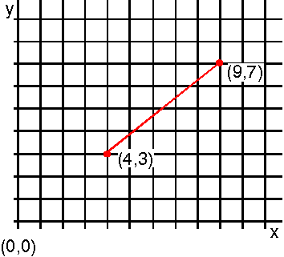
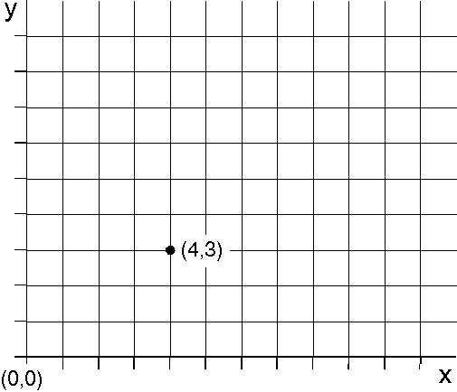

GpiLine draws a line from the current position to a specified end point, as shown in the following figure. After drawing the line, the current position is at the end point specified by GpiLine.
The current position is (4,3), and the specified end point of GpiLine is (9,7). When the line has been drawn, (9,7) becomes the current position.
To draw a single point, you can use GpiLine with an end point identical to the current position, as shown in the following figure. The current position can be determined using GpiQueryCurrentPosition.

GpiLine Used to Draw a Single Point